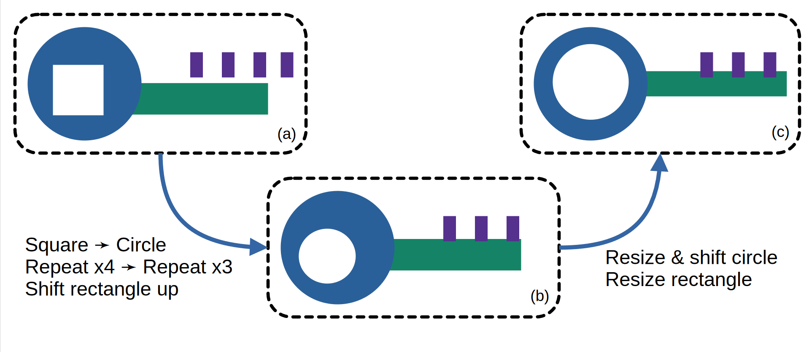

Machine learning meets programs synthesis
Main:Slide25
Our goal is to build a meta-framework that can be used to synthesize
programs to predict and understand data in a range of scientific domains.
In particular, this framework will synthesize neurosymbolic programs
that combine both neural and program-like logical components.
For example, the figure illustrates a few examples of the kinds of compositions
of neural and logical components that our meta-framework will handle.
We plan to explore neurosymbolic models that go beyond these specific examples
and interleave neural and symbolic modules following complex hierarchical or
sequential architectures. Developing a framework that facilitates
the expression of such rich compositions --- an equivalent of Pytorch or Tensorflow
for neurosymbolic programming, if you will --- is a central goal of this project.
More broadly, a major goal for the project is to develop a science of
neurosymbolic learning.
This will include developing new algorithms
that specifically address the challenges in the neurosymbolic setting---e.g.
how to design good domain specific languages (DSLs) to support the symbolic
part of a model, the presence of uncertainty, the need to perform continuous
optimization over the neural network parameters in conjunction with discrete
optimization over the program structure, and the need to actively design
experiments to disambiguate between candidate hypotheses/programs.
It will also include developing an understanding of when to deploy different
algorithms, as well as which combinations of neural and symbolic components work
better for which settings.
Our proposed framework will serve as a platform for exploring these algorithms
and deploying them in each of our problem domains.
Published papers and ongoing efforts.
A science of Neurosymbolic Programming
There is a growing body of work exploring different ways to combine the benefits of deep learning with the benefits of
hand-written programs. In a recent collaborative effort between co-PIs Swarat Chaudhuri, Yisong Yue and Armando Solar-Lezama with project
alumni Kevin Ellis and collaborators Oleksandr Polozov and Rishabh Singh, we have sought to organize existing work into a conceptual
framework that can help us understand the different ways in which neural learning and program synthesis can come together to achieve a variety
of goals ranging from interpretability, to sample efficiency to correctness and consistency with prior knowledge.
The paper was published in 2021 as part of the Foundations and Trends in Programming Languages seriesChaudhuriEPSSY21.
Learning Domain Specific Languages
The goal of this effort is to use neurosymbolic techniques to automatically learn a domain specific language (DSL) from a corpus of problems from a given domain. This is an important problem because it
addresses one of the fundamental limitations of neurosymbolic programming: the need to have an expert design a domain specific language to make program synthesis tractable.
In a first paper published in PLDI 2020, we showed that it is possible to automatically discover DSLs for a variety of problems including the problem of automatically discovering physics equations. For example,
in one experiment, our system (DreamCoder) is given data from equations describing 60 different physical laws and mathematical identities taken from AP and MCAT physics “cheat sheets”. The system is initialized
with a small number of sequence manipulation primitives like map and fold and after 8 iterations of the algorithm it is able to discover 93% of the laws and identities in the dataset by first learning the building
blocks of vector algebra and then learning constructs common to many of the formulas such as inverse square laws. The paper was published in PLDI 2020 EllisWNSMHCST21.
Model predictive program synthesis.
This effort is led by graduate students Yichen Yang and (now a former student) Jeevana Inala in collaboration with co-PIs
Bastani, Rinard and Solar-Lezama.
The approach is based on a new idea of model predictive program synthesis, which trains a generative model to predict
the unobserved portions of the world, and then synthesizes a program based on samples from this model in a way that is
robust to its uncertainty. We evaluate our approach on a set of challenging benchmarks, including a 2D Minecraft-inspired
"craft" environment where the agent must perform a complex sequence of subtasks to achieve its goal, a box-world
environment that requires abstract reasoning, and a variant of the craft environment where the agent is a MuJoCo Ant.
This work was published as a spotlight in NeurIPS 21 yang2021program.
Metric program synthesis.
In this project, led by graduate student Jack Feser in a new collaboration with co-PIs Dillig and Solar-Lezama,
we have developed a new algorithm for metric program synthesis. The algorithm is based on the observation that in
many domains, once you have a program that is close to the desired program, it is possible to rely on greedy search to
hone in on the correct program. Metric synthesis leverages this observation by pruning from the search space programs that
are similar to each other with respect to a given metric. This allows the synthesizer to search deeper in the search space.
For example, in the figure below, the synthesis algorithm can use a metric to determine that the result in (a)
is close enough to the desired solution that it can be transformed through a greedy search using both discrete
transformations (b) and continuous parameter adjustments (c). The work is under submission to OOPSLA 2022 FeserDS22metric.

Synthesis of Reactive Programs with Structured Latent State
In the context of the
Autumn effort,
we developed a new synthesis algorithm that combines automata based synthesis with functional synthesis.
This algorithm allows us to synthesize fairly large functional reactive programs from observations of sequences of frames in an Autumn game.
We are working on a full conference submission on this work, but an early version was presented at the
Advances in Programming Languages and Neurosymbolic Systems workshop in NeurIPS '21 and the Causal Inference & Machine Learning workshop, also at NeurIPS
Ria21aiplans.
Improving analysis of large language models for code generation
Modern neural language models such as GPT-3 can do an amazing job of automatically writing programs in a high-level language such as Python or Java. However, when one examines the produced code closely (or sends it through a compiler) errors are commonly found: variables are used out of scope, methods are called that do not exist, and assignments are made across variable types that are not compatible.
The problem with using a purely neural model such as GPT-3 is that programs have a well-defined semantics, and a neural language model that has been trained on billions of lines of code but has never been exposed to these semantics will often make errors. It is a very difficult task for a neural language model to read a lot of code and figure out scoping rules, or the complex type hierarchy used in an API-heavy language such as Java, without the model being given any information beyond billions of lines of code.
In this expeditions project neurostatistic, our idea is simple. We use a static-semantic analysis of the program code to produce a summary of the program written so far: which variables are in scope, what the types of those variables are, whether a variable has been initialized, etc. This analysis is then provided to the neural language model as it is asked to write code. We find the providing the results of such a symbolic analysis to the language model can greatly decrease the prevalence of many types of simple errors in the code that is produced, and the hints provided by the analysis can even increase how well the produced code matches a prompt compared to a purely neural model, according to several different metrics.
Safe Neurosymbolic Learning with Differentiable Symbolic Execution
This effort is led by graduate student Chenxi Yang with co-PI Swarat Chaudhuri. The goal of this effort is to learn worst-case-safe parameters for programs that use neural networks as well as symbolic, human-written code. Such neurosymbolic programs arise in many safety-critical domains. The approach in this work, Differentiable Symbolic Execution (DSE), samples control flow paths in a program, symbolically constructs worst-case "safety losses" along these paths, and backpropagates the gradients of these losses through program operations using a generalization of the REINFORCE estimator. This method is evaluated on a mix of synthetic tasks and real-world benchmarks. The experiments show that DSE significantly outperforms the state-of-the-art method on these tasks. The paper was published in ICLR 2022 safe.
Synthesizing Programs by Exploiting Differentiability
In order to more efficiently learn programs from data, a recent effort led by graduate student Ameesh Shah and former student Eric Zhan and PIs Yisong Yue and Swarat Chaudhuri opened up a new line of attack that exploits the differentiability of programming languages near. More specifically, differentiable languages allow for the evaluation of partially complete programs by inserting type-correct neural networks into the program's "holes", where the missing expressions are not yet synthesized. With the ability to evaluate partial programs, we can use this "neural relaxation" as a heuristic to guide classical search algorithms, such as A* search, by framing the program learning problem as a top-down inductive search through a language's derivation tree. We dubbed this heuristic "NEAR" and showed that we can use NEAR to learn accurate programmatic representations of data (i.e. classifiers) much more efficiently than existing general-purpose synthesis methods. This work was originally presented at NeurIPS 2020.
Web Question Answering with Neurosymbolic Program Synthesis
This effort is led by graduate student Jocelyn Chen in a collaboration with co-PIs Isil Dillig and Osbert Bastani. We have developed a new technique based on program synthesis for extracting information from webpages webq. To handle websites with diverse structure, we design a new neurosymbolic domain specific language that incorporates both neural NLP models as well as standard constructs for tree navigation and string manipulation. We also propose an optimal synthesis algorithm that generates all programs in the DSL that achieve optimal F! score on the training examples. We evaluated our language and algorithm on 25 different tasks across multiple domains and showed that our approach outperforms existing tools. This paper was published in PLDI 2021.
Neurosymbolic Reinforcement Learning with Formally Verified Exploration
As deep reinforcement learning is incorporated into safety-critical systems (e.g., autonomous vehicles), it becomes more and more important to ensure that these systems behave safely. At the same time, we want to keep the performance benefits of deep-learning techniques over more traditional control theoretic algorithms. In this project, we are developing neurosymbolic approaches to system control which combine the optimal behavior of deep learning algorithms with the safety verification of traditional symbolic techniques anderson2020neurosymbolic . The first paper in this project, published at NeurIPS 2020, presents REVEL, a learning algorithm which combines traditional program synthesis with off-the-shelf deep reinforcement learning algorithms. On a suite of tasks drawn from robotics and classic control, we show that REVEL is able to achieve comparable performance to existing algorithms while maintaining verifiable safety at all times during training.
Few-shot Image Classification: Just Use a Library of Pre-trained Feature Extractors and a Simple Classifier
This effort to tackle few-shot image classification is led by graduate students Arkabandhu Chowdhury and Mingchao Jiang and PIs Chris Jermaine and Swarat Chaudhuri. The approach Chowdhury_2021_ICCV shows that a library of pre-trained feature extractors combined with a simple feed-forward network learned with an L2-regularizer is extremely effective in the few-shot learning domain. The method is particularly useful in more practical cross-domain few-shot image classification settings. Extensive experimental results on a diverse set of data-sets suggests that this simple approach far outperforms several well established meta-learning algorithms. This work was accepted and presented at ICCV 2021.
Unsupervised Learning of Neurosymbolic Encoders
We present a framework zhan2021unsupervised for the unsupervised learning of neurosymbolic encoders, which are encoders obtained by composing neural networks with symbolic programs from a domain-specific language. Our framework naturally incorporates symbolic expert knowledge into the learning process, which leads to more interpretable and factorized latent representations compared to fully neural encoders. We integrate modern program synthesis techniques with the variational autoencoding (VAE) framework to learn a neurosymbolic encoder in conjunction with a standard decoder. The programmatic descriptions from our encoders can benefit many analysis workflows, such as in behavior modeling where interpreting agent actions and movements is important. We evaluate our method on learning latent representations for real-world trajectory data from animal biology and sports analytics, and show that our approach offers significantly better separation than standard VAEs and leads to practical gains on downstream analysis tasks such as for behavior classification.